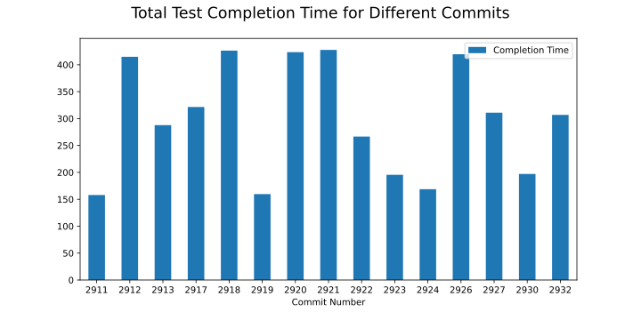

Below is listed the solvers that have slowed down by more than 100%!
NekMesh_Nektar/gz_uk: 0.23s slower
NekMesh_Gmsh/v2.2/cube_hex_lin: 0.09s slower
NekMesh_Gmsh/v2.2/cube_prism: 0.06s slower
NekMesh_Gmsh/v2.2/cube_prism_lin: 0.15s slower
NekMesh_Gmsh/v2.2/square_quad_lin: 0.07s slower
NekMesh_Gmsh/v2.2/cube_tet: 0.1s slower
NekMesh_Gmsh/v2.2/square_tri_lin: 2.86s slower
NekMesh_Gmsh/v2.2/square_quad: 0.16s slower
NekMesh_Gmsh/v4.0/cube_hex: 2.55s slower
NekMesh_Gmsh/v4.0/cube_hex_lin: 2.44s slower
NekMesh_Gmsh/v4.0/cube_tet_lin: 0.59s slower
NekMesh_Gmsh/v4.0/square_quad_lin: 0.07s slower
NekMesh_Gmsh/v4.0/extract_square_circ: 0.06s slower
NekMesh_Gmsh/v2.2/varopti_naca: 0.4s slower
FieldConvert_Hex_channel_C0helmsmoothing: 0.2s slower
ADRSolver_Advection1D_FRHU_GLL_LAGRANGE: 0.32s slower
ADRSolver_TestMMFAdvCube: 7.16s slower
ADRSolver_Advection2D_periodic_deformed_GLL_LAGRANGE_SEM_2x2: 0.41s slower
ADRSolver_Advection2D_periodic_deformed_GLL_LAGRANGE_2x2: 0.91s slower
ADRSolver_Advection2D_periodic_regular_MODIFIED_2x2: 0.85s slower
ADRSolver_Advection2D_m12_DG_quad_VarP: 0.23s slower
ADRSolver_Advection_m12_Order1: 0.21s slower
ADRSolver_Advection3D_m10_DG_hex_periodic_nodal: 3.9s slower
ADRSolver_Advection3D_DG_hex_faceRotation1122: 0.27s slower
ADRSolver_Advection3D_m10_DG_hex_VarP: 4.44s slower
ADRSolver_InviscidBurger1D_FRDG_MODIFIED: 0.24s slower
ADRSolver_Advection3D_m12_DG_prism: 5.28s slower
ADRSolver_ExDiffusion_1D_LDG: 0.05s slower
ADRSolver_ExDiffusion_2D_LFRDG_regular_Neumann: 0.1s slower
ADRSolver_ExDiffusion_2D_LDG_deformed: 0.06s slower
ADRSolver_Projection2D: 0.11s slower
ADRSolver_Helmholtz1D_8modes: 0.14s slower
ADRSolver_UnsteadyAdvectionDiffusion_3DHomo2D_MVM: 0.1s slower
ADRSolver_UnsteadyAdvectionDiffusion_3DHomo1D_MVM: 0.16s slower
ADRSolver_SVV_Quad: 0.26s slower
AcousticSolver_LEE_2DPulseAdv_WeakDG_MODIFIED: 0.16s slower
PrePacing_Courtemanche: 0.24s slower
CompressibleFlowSolver_CylinderSubsonic_P3: 0.31s slower
CompressibleFlowSolver_IsentropicVortex_FRDG_SEM: 0.2s slower
CompressibleFlowSolver_ShockTube_2D_mixedMesh_Lap: 0.2s slower
RiemannCompUnitTests: 0.1s slower
DiffusionSolver_ImDiffusion_m6: 0.1s slower
DiffusionSolver_ImDiffusion_m6_time_int: 0.1s slower
DummySolver_Dummy_3DCubeFileSingle: 0.3s slower
IncNavierStokesSolver_ChanFlow_m3_ConOBC: 0.4s slower
IncNavierStokesSolver_ChanFlow_m3_VCSWeakPress_ConOBC: 0.45s slower
AcousticSolver_APE_3DPulse_WeakDG_MODIFIED: 59.18s slower
IncNavierStokesSolver_Hex_channel_m3: 0.31s slower
IncNavierStokesSolver_Couette_3DH2D_MVM: 0.21s slower
IncNavierStokesSolver_Hex_channel_m3_srhs: 0.22s slower
IncNavierStokesSolver_SM_base_file: 0.5s slower
IncNavierStokesSolver_SM_Adj_base_file: 0.2s slower
IncNavierStokesSolver_KovaFlow_m8: 0.27s slower
IncNavierStokesSolver_KovaFlow_varP: 0.24s slower
IncNavierStokesSolver_SinCos_LinNS_3DHom1D: 0.2s slower
IncNavierStokesSolver_Tet_channel_m4_per: 0.1s slower
IncNavierStokesSolver_Cyl_AdaptiveSFD: 21.8s slower
IncNavierStokesSolver_PhaseSampling: 0.25s slower
LinearElasticSolver_L-domain: 0.37s slower
IncNavierStokesSolver_PPF_R10000_ModifiedArnoldi_Shift: 12.27s slower
IncNavierStokesSolver_PPF_R15000_ModifiedArnoldi_Shift: 13.25s slower
PulseWaveSolver_VariableAreaTest: 0.2s slower
UnitTests: 0.18s slower
LinearAlgebraUnitTests: 0.17s slower
LibUtilities_NodalDemo_Tri_Deriv_P8: 0.09s slower
LibUtilities_NodalDemo_Tri_Integral_P6: 0.1s slower
LibUtilities_NodalDemo_Tet_Integral_P6: 0.12s slower
LibUtilities_NodalDemo_Prism_Deriv_P8: 0.79s slower
LibUtilities_TimeIntegrationDemoBDFImplicitOrder1: 0.2s slower
LibUtilities_TimeIntegrationDemoCNAB: 0.16s slower
StdRegions_StdInterp_Hex_Mod_P6_Q7: 0.1s slower
StdRegions_StdProject2D_Quad_Mod_P6_Q7: 0.02s slower
LocalRegions_LocProject_Diff2D_Lin_Deformed_Quad_Mod_Basis_P6_Q7: 0.03s slower
MultiRegions_Helmholtz3D_CG_Prism: 0.23s slower
MultiRegions_Helmholtz2D_CG_P7_Modes_AllBCs_iter_ml: 0.23s slower
CompressibleFlowSolver_CylinderSubsonic_WeakDG_Implicit: 5.36s slower
IncNavierStokesSolver_ChanFlow_Accelerate: 0.21s slower
IncNavierStokesSolver_ChanStabilityMaskFunc: 8.24s slower
ADRSolver_Helmholtz1D_800modes: 10.27s slower
